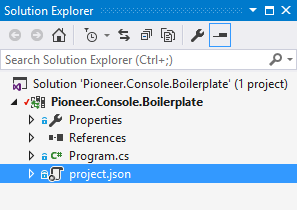

With .NET Core, we get a lot of stuff for free. If you so choose, wiring up your applications (ASP.NET or Console) with things like Dependency Injection, Configuration and Logging is as simple as can be. .NET Core bakes these features into the framework and usage of does not require a trade off of power or flexibility.
Following, I will walk you through getting up and running with all three of these items in a .NET Core console application.
Setup
Project
First thing first, lets create a new project. Open up Visual Studio, hit Ctrl+Shift+N and select the Console Application (.NET Core) project type from the templates,

Visual studio will scaffold a project for you which will end up looking like this.
Dependencies
.NET Core is all about opting into dependencies as opposed to opting out. That being said we will need to pull in a few nuget packages to facilitate our needs. Open up your project.json file and add the following packages to your dependencies node. Versions might differ depending on what version of .NET Core you are using.
"dependencies": {
"Microsoft.NETCore.App": "1.1.0",
"Microsoft.Extensions.DependencyInjection": "1.1.0",
"Microsoft.Extensions.Configuration.Json": "1.1.0",
"Microsoft.Extensions.Configuration.FileExtensions": "1.1.0",
"Microsoft.Extensions.Configuration": "1.1.0",
"Microsoft.Extensions.Options.ConfigurationExtensions": "1.1.0",
"Microsoft.Extensions.Logging": "1.1.0",
"Microsoft.Extensions.Logging.Console": "1.1.0",
"Microsoft.Extensions.Logging.Debug": "1.1.0"
},
Dependency Injection
Now that our project is ready, we need to wire up our dependency injection container so we have means to register the individual components we will be using in our program. For this demonstration, we will be registering a new service called TestService. Go ahead and create a new file called TestService.cs and add the following.
public interface ITestService
{
}
class TestService : ITestService
{
}
To maintain a separation of concern between our business based logic and the logic we use to configure and run the actual counsel application, lets create a new class called App.cs. The goal being that we will use Program.cs to bootstrap everything need to support our application and then fire off all the logic that in needed to support out "business" needs.
public class App
{
private readonly ITestService _testService;
public App(ITestService testService)
{
_testService = testService;
}
public void Run()
{
_testService.Run();
System.Console.ReadKey();
}
}
As you can see, we will use the Run() function as the main entry to our application and we use our DI container to pass in an Interface of the type ITestService.
Open up your Program.cs file and add the following.